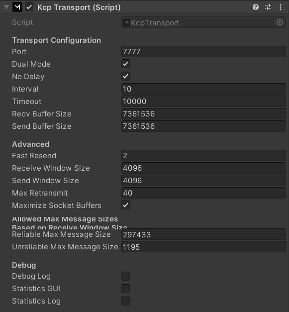
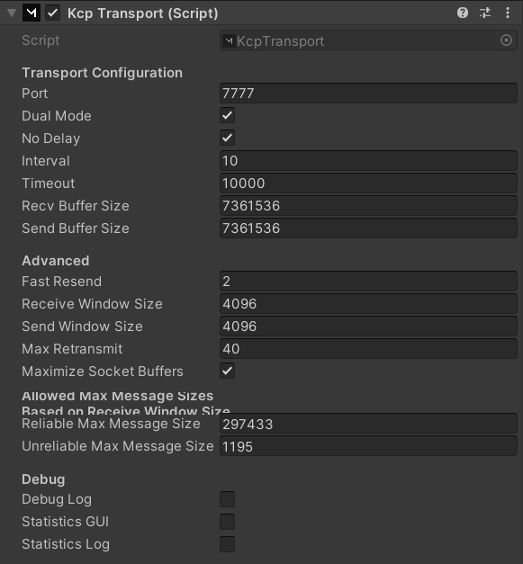

Inleiding
Dit project ben ik aan begonnen in mijn 3de jaar van mediacollege amsterdam in de eerste periode.
Het is een project waar heel erg veel verschillende studenten aan werken en iedereen werkt aan een ander
part van het project, in mijn geval ben ik bezig geweest met mirror networking (multiplayer).
Uitleg
Project Starfall is een couch game die je met je vrienden kan spelen, er zijn veel verschillende mechanics
dat deze game leuk maakt om te spelen, zoals een pull, attack, jump, smooth cam follow, boost, multiplayer etc.
Er is nog geen doel in dit spel, je kan munten verzamellen en enemies verslaan.
Dit is de NetworkManager object. Het regelt al het network waar ik aan werk die network identities hebben. De component NetworkManager regelt het laden en andere dingen zoals, spawn de player (met identity), network address, send rate etc. De HUD is een component die je kan adden als je niet zelf een hud wilt maken voor mensen joinen. De KCP Transport regelt veel dingen zoals connecten etc. vergeet deze dus niet.
 

Deze components zitten op de warrior (player) en laat alles wat te maken heeft met networking identificeren dat hij iets is met network. De network transform heeft reliable en unreliable de ene gebruikt meer bandwith dan de ander dus ik heb reliable gekozen omdat het wat fijner werkte daarmee, en volgensmij krijg je ook betere latency met reliable. Als je deze niet wilt gebruiken kan dat, maar dan moet je in elke script waar je networkbehaviour gebruikt [command] en [rpclient] gebruiken en wat anderen dingen, maar ik gebruik tranform liever want het regelt het voor mij, en ik kan altijd nog die 2 commands gebruiken als ik om transform heen moet werken. De Network Animator synchronized gewoon de animaties, niet echt veel om bij uit te leggen.
Ik heb op de playerspawnpoint een Network Start Position component geplaatst, want dan weet de network manager waar hij de player moet spawnen.
Door "if (isLocalPlayer)" toe te voegen kan ik dit stukje via client side naar de server sturen zodat hij weet dat dit gebeurt.
private void Start()
{
if (isLocalPlayer)
{
_playerInput = GetComponent();
_playerControlsActions = _playerInput.actions;
_staminaLookup = GetComponent();
levelReloader = FindObjectOfType();
_playerControlsActions["Jump"].performed += Jump;
_playerControlsActions["Grab"].performed += Grab;
_playerControlsActions["ReleaseGrab"].started += ReleaseGrab;
_playerControlsActions["ClimbUp"].started += ClimbUp;
_playerControlsActions["ResetLevel"].started += ResetLevel;
InstantiatePlayerAbility();
if (targetSelector != null) TargetingStart();
_playerControlsActions.Enable();
}
}
Door "if (isLocalPlayer)" toe te voegen kan ik dit stukje via client side naar de server sturen zodat hij weet dat dit gebeurt. Dit is vooral voor targetting, movement en attacking.
private void FixedUpdate()
{
if (isLocalPlayer)
{
if (targetSelector != null) TargetingStart(false);
var isBlockingMovement = CannotMove || playerSpecialAbility != null && playerSpecialAbility.IsBlockingMovement;
if (isBlockingMovement)
{
if(CannotMove)playerMovement.currentMovementState = MovementStates.Walking; // todo: dit moet wat netter gemaakt worden.
return;
}
Vector2 moveInput = _playerControlsActions["Move"].ReadValue();
var isSprinting = _playerControlsActions["SprintActivator"].ReadValue() == 1 && moveInput.magnitude != 0;
var canSprint = isSprinting && _staminaLookup.UseStamina("Sprinting");
var canGrab = grabSkill.IsGrabbing && _staminaLookup.UseStamina("Grabbing");
MovementStates currentMovementState;
if (canSprint && _maySprint) currentMovementState = MovementStates.Sprinting;
else if (!_maySprint) currentMovementState = MovementStates.Exhausted;
else currentMovementState = MovementStates.Walking;
playerMovement.currentMovementState = currentMovementState;
if (comboSystem == null || !comboSystem.InCombo || !CannotMove) playerMovement.Move(moveInput);
}
}
Door "if (isLocalPlayer)" toe te voegen kan ik dit stukje via client side naar de server sturen zodat hij weet dat dit gebeurt. Dit is het meeste van de movement en een beetje animation.
private void FixedUpdate()
{
if (isLocalPlayer)
{
if (_isMovementDisabled) return;
CheckGroundState();
if (_shouldJump)
{
_jumpDelayCounter++;
if (_jumpDelayCounter == _jumpDelay)
{
_jumpDelayCounter = 0;
_shouldJump = false;
Jump();
}
}
if (MayJump()) StartJump();
else _jumpPrimed = false;
if (_isMoving) currentMoveDuration += Time.deltaTime;
CalculateVelocity();
UpdateAnimation(Mathf.Abs(_velocity.x));
if (_isGrounded && _velocity.magnitude == 0 && _lastVelocity.magnitude > 0) onStopMoving?.Invoke();
if (_isGrounded && _velocity.magnitude > 0 && _lastVelocity.magnitude == 0) onStartMoving?.Invoke();
if (_isGrounded && _velocity.magnitude > 0) onGroundWalk?.Invoke();
if (_isGrounded)
{
IsJumping = false;
transform.rotation = Quaternion.Euler(0,0,0);
}
_lastVelocity = _velocity;
if (_velocity.x == 0)
{
ResetMoveDuration();
return;
}
UpdateMovement(_velocity);
}
}
Ik gebruik hier Command zodat het met de server altijd synced, dus dan kan je alleen zien dat de server
de pull animation gebruik op beide client en server, maar nog niet de animation van client.
Dat is waar ik een nieuwe function aanmaak zodat ik het met ClientRPC sync naar de server voor client.
Dus nu als ik die functie in de oude normale DoSpecial functie doe met alles goed geconnect dan zou hij
de pull animatie moeten laten werken op beide schermen voor elke speler.
[Command(requiresAuthority = false)]
public void DoSpecial(int layerIndex)
{
SyncSpecial(layerIndex);
_animator.SetLayerWeight(layerIndex, 1f);
_animator.SetBool(IsSpecialActive, true);
_animator.SetTrigger(Special);
StartCoroutine(WaitForTime());
StartResetCoroutine();
}
[ClientRpc]
void SyncSpecial(int layerIndex)
{
_animator.SetLayerWeight(layerIndex, 1f);
_animator.SetBool(IsSpecialActive, true);
_animator.SetTrigger(Special);
}
De rest is allemaal niet echt belangrijk, het was vooral tussen de al gemaakte scripts zoeken wat naar wat lijd en hoe ik alles kan implementen met networking wat nogal lastig ging, omdat hun hun codes niet echt goed en efficient maken, maar het lukt uiteindelijk wel. Dus in kort wat ik heb gedaan is: "Player spawn, sync other player, sync movement, sync jump, sync animation walk, sync animation jump, sync pull, sync attack, animation flip, en een paar kleine toevoegingen om het beter te laten werken."